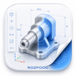

ROZFOOD ENGINEERING STUDIO
OFFLINE CAD · v14.0.0 · PRODUCTION VIEW SYNTHESIZER
ПРОЕКТ
Новая модель
⬡ 3D
▱ Чертёж
↔ Размеры
☷ Сборка
Оффлайн ядро
☀︎
3D модель
SLDASM · локальный импорт
⌖ Вписать
Объём
B‑Rep
Каркас
◐ Разрез
TESS Recognition · 3D
Экспорт отчёта
Каркас
Рабочий
Производственный
Контрольный
Сборочный
Деталь
Развёртка
⌖ Лист
✎ Правка
✎ Редактировать
⌕ Зум
✋ Панорама
↶
↷
SVG
⬡
Загрузите SolidWorks .SLDASM или .SLDDRW
SLDASM откроется как 3D-сборка; SLDDRW — как 2D-эталонный чертёж с листами, превью и метаданными.
X
Y
Z
Тип
Размер
Значение
Надёжность
Габарит X
—
Габарит Y
—
Габарит Z
—
Тип 3D
—
Треугольников
—
B‑Rep рёбер
—